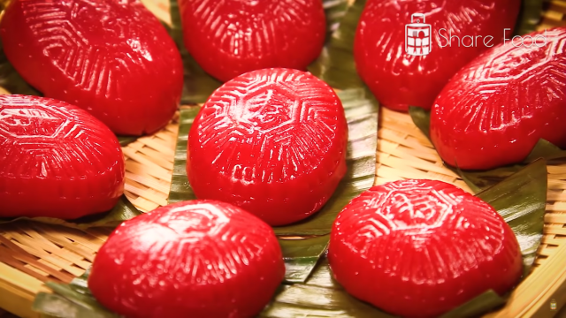

Ang Ku Kueh

Ang Ku Kueh are traditional Chinese snacks shaped to look like tortoise shells
with the chinese characters "longevity" imprinted in the centre
This simple recipe is easy to follow and delicious for the family!
Reference Recipe: Link
Ingredients:
Green Bean Filling
- 300g split green bean, washed and soaked for 6 hours
- 200g fine sugar
- 4 tblsp oil
Ang Ku Skin
- 1/8 tsp Wilton orange colouring
- 200g wheat starch, Tung Mein Fun
- 150g water
- 500g boiling water
- 4 tblsp sugar
- 500g glutinous rice flour
- 100g mashed orange color sweet potato
- 50g water
- 120g cooking oil
Making of Ang Ku
- 1 banana leaf cut in rectangles to fit the mould
- 3 tblsp oil
Steps:
Green Bean Filling
- Steam green bean over boiling water for 30-40 minutes till soft.
- Blend or mashed green bean till become a paste.
- In a wok, combine green bean paste, sugar and oil.
Stir on low medium heat till thick and do not stick to your hands.
- Cool it and shaped into 30 balls of about 20 g.
(The size of filling will depend on the size of your mould).
Ang Ku Skin
- Mix coloring, wheat starch and water. Stir till blended.
- Add in boiling water and mix till smooth and become translucent.
- Add in sugar, glutinous rice flour, sweet potatoes and water gradually. Knead till combined.
- Slowly add in oil and keep on kneading till smooth and do not stick onto your hands.
Making of Ang Ku
- Lightly grease the cut banana leaves with oil.
- Divide skin dough into 30 pieces.
Flatten each dough into 1/4 inch thick and wrap the filling inside. Roll into a ball.
- Lightly dust the Angku mould with glutinous rice flour. Press the dough ball into the mould and lightly knock it out.
- Place Angku on the banana leaf.
- Steam over boiling water for 10 minutes.
- Brush the surface of the cooked Angku with oil to give it a glossy look.
To return to main directory, click here